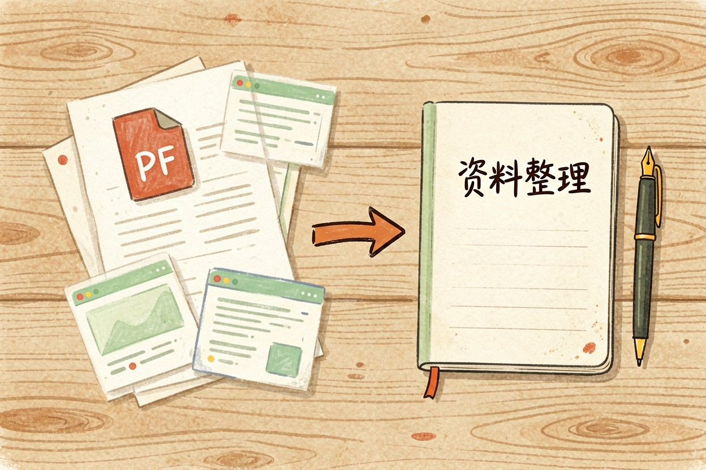
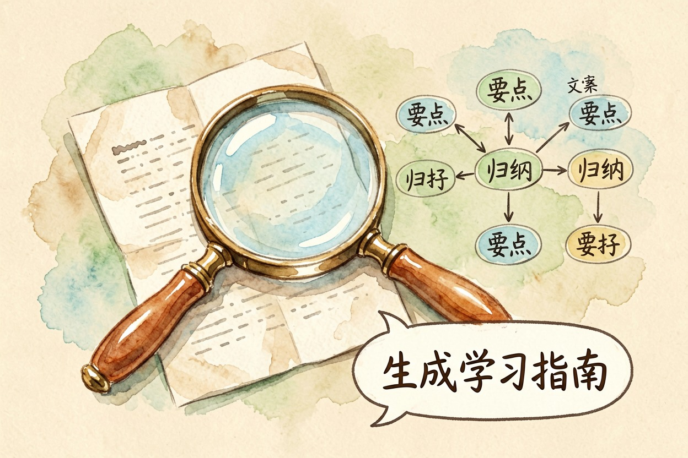
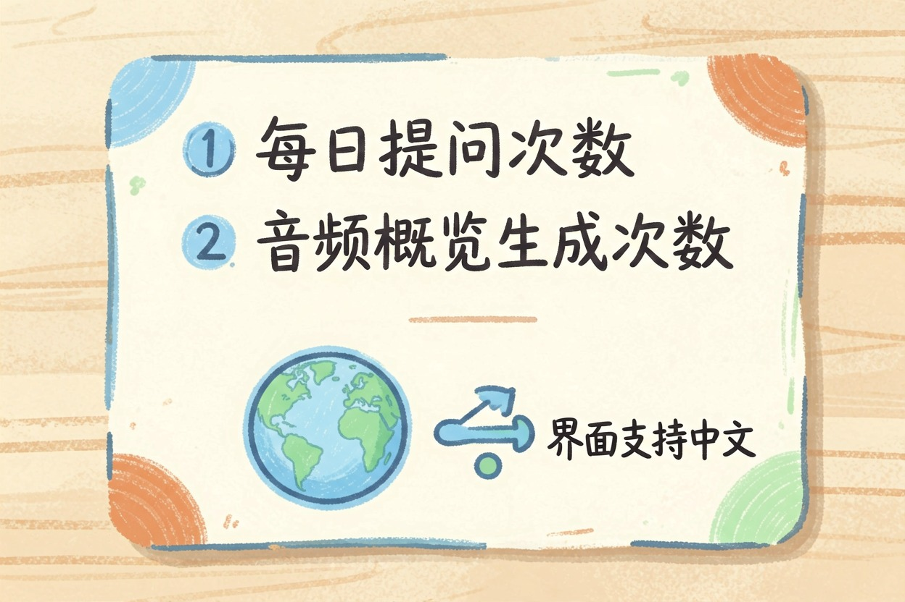
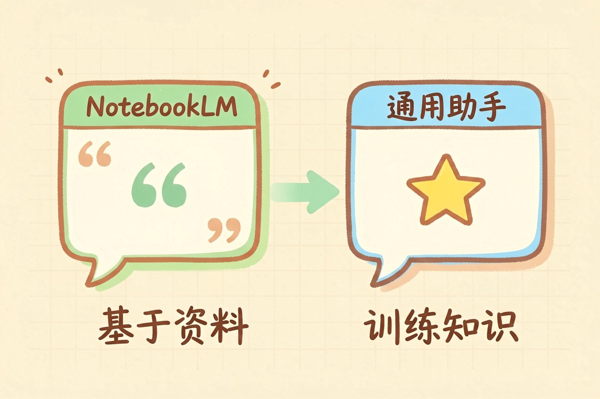
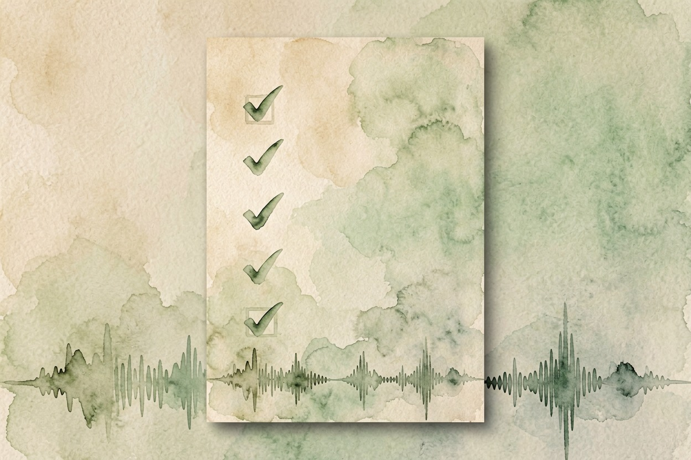

NotebookLM 好用吗？资料整理场景与免费额度
资料多到读不完时它最顺手：把 PDF 传进去，变成能提问、带引用的知识库，但别指望它全能。
NotebookLM 好用吗？一句话结论：整理资料最顺手

NotebookLM 好用吗？如果你手上有一堆 PDF、网页要整理成能提问的知识库，它是目前最顺手的选择之一。把资料传上去，它就变成只基于你资料回答的助手，每条回答带引用，方便核对。但它解决的不是「什么都能答」，而是「把你给的资料吃透」。值不值，看你的场景是不是资料整理。资料一多就乱的人，它最值；只是想找个什么都聊的助手，它反而绕远路。判断方法很简单：你最近有没有一份读到一半就放弃的长资料？有，它就派得上用场。
擅长什么：论文、报告、学习资料的问答式整理

上传 PDF、网页后，可以用自然语言提问，归纳要点、找关键信息。还能生成学习指南、思维导图，甚至音频概览，把资料变成可听的对话。论文、行业报告、学习资料这类需要精读的东西，它特别合适：读不完的长文档，可以让它先帮你读薄。资料越聚焦，效果越好。整理文献时，把它的用法和 AI 写论文那篇对着看，分工更清楚。它擅长把「读过的东西」变成「能用的东西」，这是它和普通对话工具最大的差别。
免费额度和中文支持

免费版对每日提问次数、音频概览生成次数、每个笔记本的来源数量都有上限。官方帮助中心有一张限额表，可以直接查。但它明确标注了数字会调整。别照抄攻略里的数，用之前自己去官网翻一眼当前值。界面和回答支持中文，但部分生成功能的中文效果，以官方实际表现为准。数据会上传到 Google 服务器，机密文件先确认政策。国内访问可能需要额外网络条件。这点必须说清楚。别等传完资料才发现用不了。额度对多数人够用。重度使用再考虑付费档。用之前先把这两条边界看清楚：数据去哪、访问顺不顺。
和 ChatGPT / 豆包这类通用助手的区别

核心差异一句话：NotebookLM 只基于你上传的资料回答，带引用、不瞎编；通用助手靠训练知识，什么都能聊但无法保证引用来源。资料整理场景选 NotebookLM，开放问答、写文章、查最新信息选通用助手。想划清论文场景的边界，可以参考用 AI 写论文的边界那篇。两者是分工关系，各有各的战场。
什么情况下别依赖它
资料太少时它的优势不明显。直接问通用助手更快。机密或隐私文件，上传前想清楚数据去留。要「最新联网信息」它不是首选，它的世界就是你的资料。资料本身有错，它也会跟着错，因为它只认你喂进去的东西。写文章、搞创作，别指望它。要文档里就地续写整理，看Notion AI 值得开吗。把下面这段指令发给它，能把一份资料问透：
我上传了一份资料【资料名/主题】。请帮我：
1) 用 5 条要点概括核心内容；2) 指出文中对我最有用的 3 个信息点；
3) 找出文中可能过时或矛盾的地方；4) 基于这份资料给我出 3 道自测题。
每条回答都请引用原文位置，方便我核对。工具价格与免费额度可能变动，实际以各工具官网当前说明为准。 NotebookLM 好用吗？整理资料它最顺手，但它是「基于你给的资料」，别把它当无所不知。

本文信息核对于 2026-08-05。AI 产品的价格、免费额度与功能变动频繁，实际以各工具官网当前说明为准。